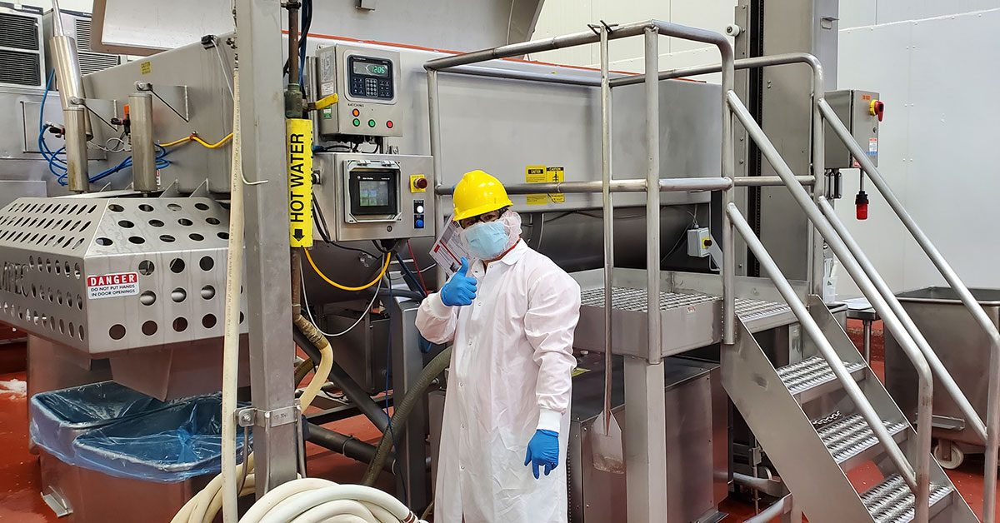

Investigation Essentials for Frontline Supervisors
Using the FIND Model to conduct fair, fact-based workplace investigations

Course Overview
Supervisors investigate workplace concerns every day — from attendance and performance issues to food safety incidents, GMP violations, policy breaches, and safety concerns. This course gives you a simple, consistent process you can apply to any basic workplace investigation.
The Key Message
Good supervisors don't jump to conclusions. They FIND the facts.
The FIND Model
Letter
Stage
F
Frame the Issue
I
Investigate the Facts
N
Narrow Down What Happened
D
Document and Decide
Watch: The FIND Model Overview
Before you begin, watch this short video for an overview of the FIND model.
Note
Estimated time: about 60 minutes (self-paced). You can leave and return at any time — your progress is saved automatically.
Learning Outcomes
By the end of this course, you will be able to:
Recognize when a workplace concern requires an investigation
Apply the FIND model to any basic workplace investigation
Gather relevant evidence and information objectively
Conduct effective fact-finding conversations
Analyze information and identify root causes
Document findings clearly and accurately
Make fair, consistent, and evidence-based decisions
The Way We Work
Conducting fair, fact-based investigations is one way supervisors bring our shared Operations values — The Way We Work — to life every day. Our values are:
We are Honest and Respectful — Being honest is what we know to be the right thing, in thought and action. Being respectful is treating others how we would want to be treated.
We Make Great Quality Food — Making great quality food is focusing on quality control, refining our preparation skills and contributing towards creating a product we would want shared in our communities.
We Hope to Improve Everyday — We hope to improve everyday by taking opportunities to reflect, learn and grow.
We Work Together as a Team — Working together as a team means that we are all contributing and working towards the same goal.
We Measure Our Success — We measure our success by defining our goals and targets, our confidence level and our job satisfaction.
We Commit to Our Safety Promise — Committing to our safety promise means prioritizing the safety of ourselves, our teams and our products.
We Take Pride in Our Work — Taking pride in our work is knowing why our work matters, striving for continuous progress, acknowledging others and being proud of our role.
We Have the Courage to Speak Up — When we have the courage to speak up, we are building a culture where everyone feels heard and valued.
The FIND model connects most directly to the two values highlighted below:
We are Honest and Respectful
Determining the facts objectively, and treating everyone involved with respect, is honesty and respect in action.
We Have the Courage to Speak Up
When team members have the courage to raise a concern, handling it fairly builds a culture where everyone feels heard and valued.
How This Course Works
You will work through one module for each stage of the FIND model, with short interactive activities along the way. At the end, you will apply the full model in a scored capstone scenario. A printable FIND checklist is available any time from the Job Aid tab.
Note
Capstone: the final scenario is scored. You need 80% to pass. The module activities before it are for practice and are not graded.